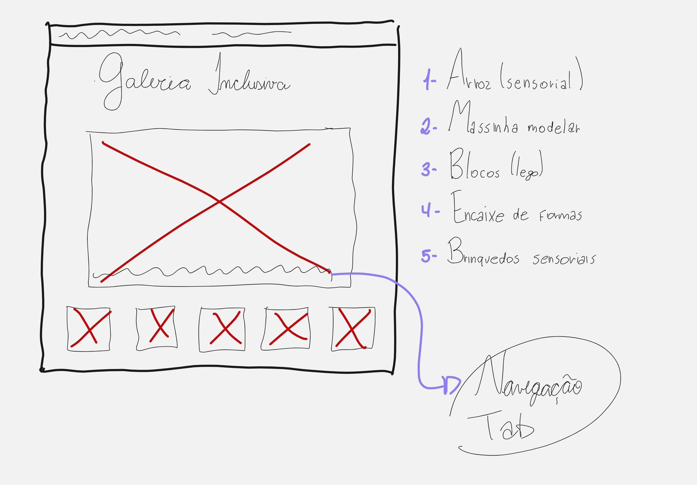

Galeria Inclusiva
Este projeto tem a minha cara porque une duas grandes paixões: a educação inclusiva e a tecnologia. Como faço faculdade de pedagogia e atuo como estagiária acompanhando crianças com diferentes deficiências na escola, quis trazer esta realidade para a programação.
Desenvolvi uma galeria de recursos pedagógicos inclusivos que retrata crianças com diversas deficiências, interagindo com brinquedos educativos e acessíveis.
Contexto e Desenvolvimento
Objetivo e Propósito
Aplicar conhecimentos de HTML, CSS e JavaScript na construção de uma interface web dinâmica e acessível, utilizando a tecnologia para apresentar recursos relacionados à educação inclusiva de forma organizada e intuitiva.
Desenvolvimento Técnico e Acessibilidade
Neste projeto, introduzi o JavaScript para adicionar interações dinâmicas à interface e aprofundei o uso de CSS, trabalhando organização de layout e responsividade. Foram aplicados recursos de acessibilidade web, incluindo a navegação de elementos interativos por meio da tecla Tab, reduzindo a dependência do mouse e ampliando as possibilidades de navegação.
Ver Projeto ao Vivo
Acesse o site publicado e explore a galeria de recursos pedagógicos inclusivos.
Acessar Projeto ao VivoProcesso e Estrutura
Abaixo estão os wireframes que guiaram a estrutura da página e a organização do conteúdo.

Organização de Conteúdo
Destaque para a área principal de interação e exibição das imagens da galeria.